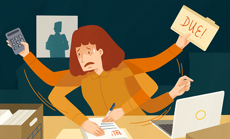
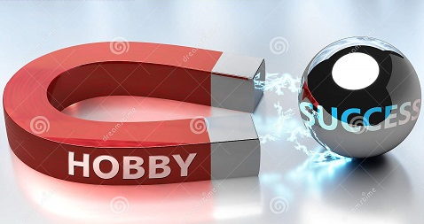

You've done it! Congratulations, it means you are looking forward to improving your life!
I am going to get you through some important facts about hobbies and at the end
you have attached links where you can get some ideas of hobbies you could practice, and you might like.
Let's start, shall we?
1. Hobbies give you the opportunity to meet new people
Doing a hobby can get you to know other people with the same interests. You can join a club or a team, if you fancy sports,
you can go at a paint workshop or you can practice photography if your hobby might be art.
These type of activities gets you in the posture of being around people who share your passion; therefore, you can improve your technique and you can widen your knowledge.
2. Hobbies can create strong, healthy social connections
We live in a digital world, in which we might not even realise how easy it is to keep ourselves within the house’s walls in front of some devices, which, most of the time, are unhealthy.
A hobby helps you to integrate among others and changing information with same interests’ people is relaxing, comfortable and it helps you to get closer to other people.
3. Practicing a hobby can improve self-esteem
In case you do not like your workplace, your partner does not give you enough reasons to smile or you just simply are in a situation where you lost your life’s path,
creating a new hobby can be very good to regain your motivation, or even further, to improve it.
4. A hobby is a positive challenge
Daily challenges at the workplace come with anxiety, stress and deadlines, most of the time; whereas, practicing a hobby gives you the freedom to try new things without fear of failing.
Commit to risks and set different objectives like: acquiring a rare coin, if you fancy collection, improving your body’s strength if your passion is sport or visiting an exotic island if
your hobby is traveling. By the time you will touch your goal you will see how your self-esteem will grow, therefore you will be more efficient and capable of further success with other things in life.

5. Sport hobbies help you have a nice body
In case you struggle to get to have a nice body or to keep your body in shape, a hobby that involves sport activities could motivate you more and it could transform your effort
into an activity which is relaxing and pleasant. Hobbies like dancing, cycling, hiking, fitness and swimming help you to keep your body in shape, they can take you out of the office
or house and, furthermore, you can save money as well, as these types of hobbies are not expensive.

6. Having a hobby makes you different among the others
Parties and hanging out with friends are good opportunities to socialize, but whom would be interested in your workplace, the fact you found a new supplier or anything like that.
What happens within an office remains in an office. But you can easily get attention with what you have done in your last hiking trip, what you have done at your last training
session or how you chose to paint a new picture.
7. Hobbies help you to get rid of boredom
Choose to be interested, learn new things to strengthen your passion when you get back from work, therefore you prevent boredom and you will not have any destructive habits,
like sitting in front of the tv and drinking 3 beers a day.
There are just so, so many advantages of having one or more hobbies!
Finding a hobby that is suitable for you and practicing it, can improve your overall attention, power to focus and concentration. Thus, you can succeed within other activities,
like work, relationships and family. Nevertheless, practicing a hobby for lifetime, will help you overcome obstacles and make decisions. Once learnt, these abilities will help you,
at your workplace, in another environment or any situation, with ease.
As I said, you have two links of some hobbies ideas below:
🔥 some hobbies 🔥
🔥 some other hobbies🔥